VnExpress News
Python Selenium BeautifulSoup Pandas CSV Export


Code Snippet:
from selenium import webdriver
from bs4 import BeautifulSoup
import pandas as pd
import time
url = "https://vnexpress.net/"
# Cấu hình Chrome options
options = webdriver.ChromeOptions()
options.add_argument("--disable-gpu")
options.add_argument("--window-size=700,800")
options.add_argument("user-agent=Mozilla/5.0 (Windows NT 10.0; Win64; x64) AppleWebKit/537.36")
driver = webdriver.Chrome(options=options)
driver.get(url)
time.sleep(3)
html = driver.page_source
driver.quit()
# Parse HTML với BeautifulSoup
soup = BeautifulSoup(html, 'lxml')
character_news = soup.find('div', class_='row-menu')
data = []
if character_news:
cat_menus = character_news.find_all('ul', class_='cat-menu')
for menu in cat_menus:
first_li = menu.find('li')
if first_li:
main_link = first_li.find('a')
if main_link:
main_name = main_link.get_text(strip=True)
main_href = main_link.get('href', '')
data.append({"Name": main_name, "Link": main_href, "Type": "Main"})
# Các mục con
for li in menu.find_all('li')[1:]:
sub_link = li.find('a')
if sub_link:
sub_name = sub_link.get_text(strip=True)
sub_href = sub_link.get('href', '')
data.append({"Name": sub_name, "Link": sub_href, "Type": "Sub"})
# Lưu dữ liệu ra CSV
df = pd.DataFrame(data)
df.to_csv("character_news_vnexpress.csv", index=False, encoding='utf-8-sig')VnExpress Scores
Python Requests BeautifulSoup CSV Processing Error Handling Rate Limiting

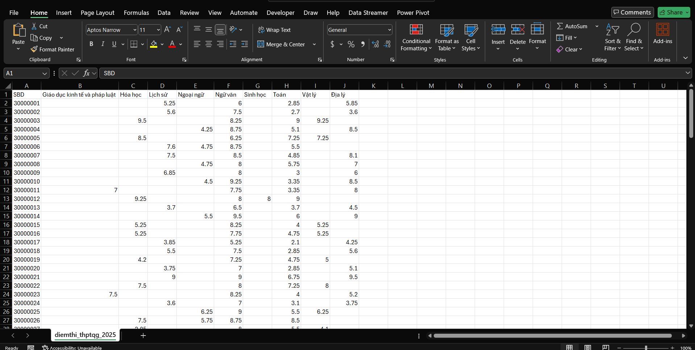
Code Snippet:
import requests
import requests
from bs4 import BeautifulSoup
import csv
import time
import random
import os
START_SBD = 30000001
END_SBD = 39999999
YEAR = 2025
MAX_ERRORS = 3
OUTPUT_FILE = 'diemthi_thptqg_2025.csv'
headers = {
'User-Agent': 'Mozilla/5.0 (Windows NT 10.0; Win64; x64) AppleWebKit/537.36 (KHTML, like Gecko) Chrome/120.0.0.0 Safari/537.36',
'Accept-Language': 'vi-VN,vi;q=0.9,en-US;q=0.8,en;q=0.7',
}
all_subjects = set()
rows = []
error_count = 0
def get_student_data(sbd):
url = f"https://diemthi.vnexpress.net/index/detail/sbd/{sbd}/year/{YEAR}"
print(f"Lấy SBD: {sbd}")
try:
resp = requests.get(url, headers=headers, timeout=10)
if resp.status_code != 200:
return None
soup = BeautifulSoup(resp.text, 'html.parser')
info = soup.find('div', class_='o-detail-thisinh__info')
diemthi = soup.find('div', class_='o-detail-thisinh__diemthi')
if not info or not diemthi:
return None
sbd_tag = info.find('h2', class_='o-detail-thisinh__sbd')
sbd_val = sbd_tag.find('strong').text.strip() if sbd_tag else str(sbd)
table = diemthi.find('table', class_='e-table')
if not table:
return None
tbody = table.find('tbody')
subjects = {}
for tr in tbody.find_all('tr'):
tds = tr.find_all('td')
if len(tds) == 2:
mon = tds[0].text.strip()
diem = tds[1].text.strip()
subjects[mon] = diem
return {
'SBD': sbd_val,
'Subjects': subjects
}
except Exception:
return None
def write_csv(rows, all_subjects):
fieldnames = ['SBD'] + sorted(all_subjects)
with open(OUTPUT_FILE, 'w', newline='', encoding='utf-8-sig') as f:
writer = csv.DictWriter(f, fieldnames=fieldnames)
writer.writeheader()
for row in rows:
for mon in all_subjects:
if mon not in row:
row[mon] = ''
writer.writerow(row)
def append_csv(row, all_subjects, write_header=False):
fieldnames = ['SBD'] + sorted(all_subjects)
with open(OUTPUT_FILE, 'a', newline='', encoding='utf-8-sig') as f:
writer = csv.DictWriter(f, fieldnames=fieldnames)
if write_header:
writer.writeheader()
for mon in all_subjects:
if mon not in row:
row[mon] = ''
writer.writerow(row)
# File exist or not
file_exists = os.path.exists(OUTPUT_FILE)
for sbd in range(START_SBD, END_SBD + 1):
data = get_student_data(sbd)
if data is None:
error_count += 1
if error_count >= MAX_ERRORS:
print(f"Dừng lại ở SBD {sbd} do gặp {MAX_ERRORS} lần lỗi liên tiếp.")
break
else:
error_count = 0
new_subjects = set(data['Subjects'].keys()) - all_subjects
all_subjects.update(data['Subjects'].keys())
row = {'SBD': data['SBD']}
row.update(data['Subjects'])
rows.append(row)
# If new subjects found, update the entire CSV file with new header
if new_subjects and len(rows) > 1:
print(f"Phát hiện môn mới: {new_subjects}. Đang cập nhật lại file CSV...")
write_csv(rows, all_subjects)
else:
# If no new subjects found, append the row to the existing CSV
append_csv(row, all_subjects, write_header=(not file_exists and len(rows) == 1))
file_exists = True
time.sleep(random.uniform(0.2, 0.7))Pinterest Downloader (Playwright)
Python Playwright Async/Await Requests Loguru ThreadPoolExecutor

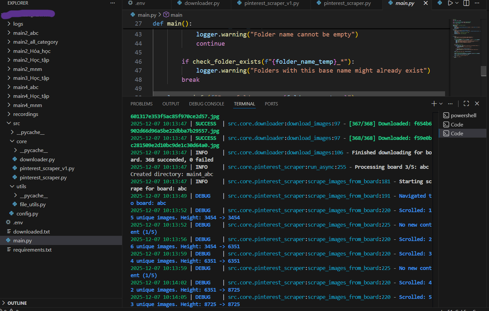
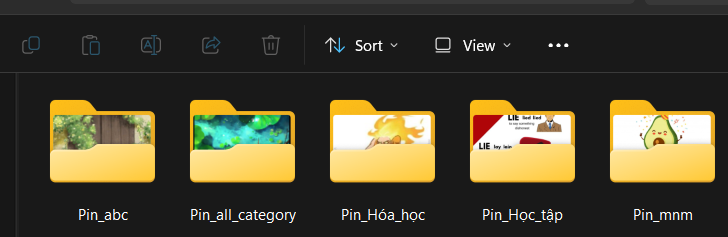

Code Snippet:
import sys
from loguru import logger
from src.core.pinterest_scraper import PinterestScraper
from src.utils.file_utils import check_folder_exists
from src import config
# Cấu hình Loguru với màu sắc và file rotation
logger.remove()
logger.add(
sys.stderr,
format="{time:YYYY-MM-DD HH:mm:ss} | {level: <8} | {name}:{function}:{line} - {message}",
level="DEBUG",
colorize=True
)
logger.add(
"logs/pinterest_scraper_{time:YYYY-MM-DD}.log",
rotation="10 MB",
retention="7 days",
compression="zip"
)
def main():
"""Main function to run the Pinterest image downloader."""
logger.info("=== Pinterest Image Downloader Started ===")
# Validate credentials
if not config.USERNAME or not config.PASSWORD or "default" in config.USERNAME:
logger.error("Pinterest credentials are not set!")
return
# Get folder name from user
folder_name_temp = input("Enter a base name for the download folders: ")
# Initialize and run the scraper
scraper = PinterestScraper(username=config.USERNAME, password=config.PASSWORD)
scraper.run(base_folder_name=folder_name_temp)
logger.success("=== Process Finished ===")Code Snippet:
import asyncio
from playwright.async_api import async_playwright, TimeoutError as PlaywrightTimeoutError
from loguru import logger
from src import config
from src.core.downloader import ImageDownloader
class PinterestScraper:
def __init__(self, username: str, password: str):
self.username = username
self.password = password
self.downloader = ImageDownloader()
async def _setup_browser(self):
"""Khởi tạo Playwright browser với video recording."""
self.playwright = await async_playwright().start()
self.browser = await self.playwright.chromium.launch(
headless=config.HEADLESS,
slow_mo=config.SLOW_MO,
args=['--disable-notifications', '--no-sandbox']
)
context_options = {
'viewport': {'width': config.VIEWPORT_WIDTH, 'height': config.VIEWPORT_HEIGHT},
'user_agent': config.USER_AGENT,
'locale': 'en-US'
}
# Video recording nếu được bật
if config.RECORD_VIDEO:
context_options['record_video_dir'] = config.VIDEO_DIR
context_options['record_video_size'] = config.VIDEO_SIZE
self.context = await self.browser.new_context(**context_options)
self.context.set_default_timeout(config.ACTION_TIMEOUT_MS)
self.page = await self.context.new_page()
async def login(self):
"""Đăng nhập Pinterest với Playwright auto-wait."""
await self.page.goto(config.BASE_URL, wait_until='domcontentloaded')
await self.page.click(config.LOGIN_BUTTON_SELECTOR)
await self.page.fill(config.EMAIL_INPUT_SELECTOR, self.username)
await self.page.fill(config.PASSWORD_INPUT_SELECTOR, self.password)
await self.page.press(config.PASSWORD_INPUT_SELECTOR, 'Enter')
await self.page.wait_for_selector(config.AVATAR_SELECTOR, state='visible')
logger.success("Login successful")Code Snippet:
import os
import requests
from concurrent.futures import ThreadPoolExecutor, as_completed
from loguru import logger
class ImageDownloader:
"""Handles downloading images với parallel processing."""
def __init__(self, max_workers: int = 5):
self.max_workers = max_workers
def _download_single_image(self, url: str, folder_name: str) -> tuple:
"""Download một image từ URL sử dụng requests."""
try:
highest_res_url = url.split(',')[-1].replace(' 4x', '').strip()
filename = highest_res_url.split('/')[-1].split('?')[0]
filepath = os.path.join(folder_name, filename)
if os.path.exists(filepath):
return (highest_res_url, True, "Already exists")
headers = {'User-Agent': config.USER_AGENT}
with requests.get(highest_res_url, stream=True, timeout=15, headers=headers) as r:
r.raise_for_status()
with open(filepath, 'wb') as f:
for chunk in r.iter_content(chunk_size=8192):
f.write(chunk)
return (highest_res_url, True, "")
except Exception as e:
return (url, False, str(e))
def download_images(self, image_urls: list, folder_name: str):
"""Downloads images với parallel processing."""
unique_urls = sorted(list(set(image_urls)))
with ThreadPoolExecutor(max_workers=self.max_workers) as executor:
future_to_url = {
executor.submit(self._download_single_image, url, folder_name): url
for url in unique_urls
}
for future in as_completed(future_to_url):
url, success, error = future.result()
if success:
logger.success(f"Downloaded: {url.split('/')[-1][:50]}")Code Snippet:
import os
from dotenv import load_dotenv
load_dotenv()
# --- Credentials ---
USERNAME = os.getenv("PINTEREST_USERNAME", "default_user@example.com")
PASSWORD = os.getenv("PINTEREST_PASSWORD", "default_password")
# --- Browser Settings ---
USER_AGENT = "Mozilla/5.0 (Windows NT 10.0; Win64; x64) AppleWebKit/537.36"
VIEWPORT_WIDTH = 1200
VIEWPORT_HEIGHT = 800
HEADLESS = False
SLOW_MO = 100
# --- Pinterest Selectors ---
BASE_URL = "https://www.pinterest.com"
LOGIN_BUTTON_SELECTOR = "[data-test-id='simple-login-button']"
EMAIL_INPUT_SELECTOR = "#email"
PASSWORD_INPUT_SELECTOR = "#password"
AVATAR_SELECTOR = "[data-test-id='gestalt-avatar-svg']"
BOARD_TITLE_SELECTOR = "[data-test-id='board-card-title'] h2"
IMAGE_SELECTOR = "img[srcset]"
# --- Video Recording ---
RECORD_VIDEO = True
VIDEO_DIR = "recordings"
VIDEO_SIZE = {"width": 1280, "height": 720}Pinterest Downloader (Selenium)
Python Selenium BeautifulSoup Chrome WebDriver python-dotenv


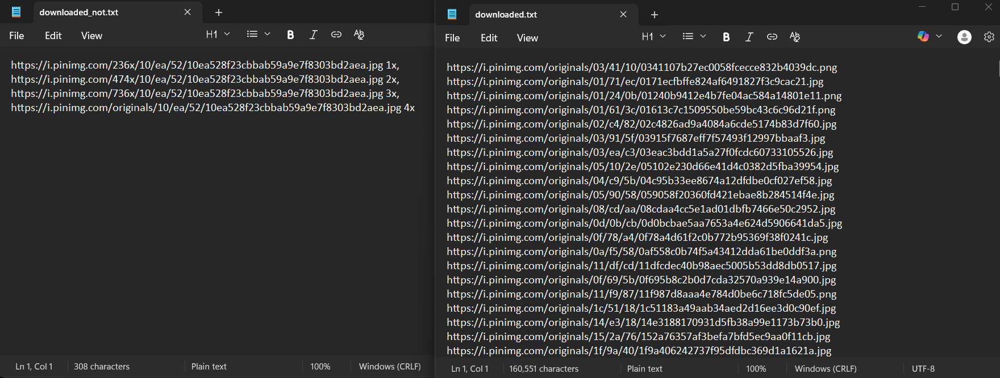
Code Snippet:
from src.core.pinterest_scraper import PinterestScraper
from src.utils.file_utils import check_folder_exists
from src import config
def main():
"""Main function to run the Pinterest image downloader."""
print("--- Pinterest Image Downloader ---")
# Validate credentials are set
if not config.USERNAME or not config.PASSWORD or "default" in config.USERNAME:
print("\nERROR: Pinterest credentials are not set.")
print("Please create a '.env' file in the root directory with:")
print("PINTEREST_USERNAME=your_email@example.com")
print("PINTEREST_PASSWORD=your_password")
return
# Get folder name from user
while True:
folder_name_temp = input("Enter a base name for the download folders: ")
if not folder_name_temp:
print("Folder name cannot be empty.")
continue
if check_folder_exists(f"{folder_name_temp}_*"):
print("Warning: Folders with this base name might already exist.")
break
# Initialize and run the scraper
scraper = PinterestScraper(username=config.USERNAME, password=config.PASSWORD)
scraper.run(base_folder_name=folder_name_temp)
print("\n--- Process Finished ---")
if __name__ == "__main__":
main()Code Snippet:
from time import sleep
from bs4 import BeautifulSoup
from selenium import webdriver
from selenium.webdriver.chrome.options import Options
from selenium.webdriver.common.by import By
from selenium.webdriver.common.keys import Keys
from selenium.webdriver.support.ui import WebDriverWait
from selenium.webdriver.support import expected_conditions as EC
from src import config
from src.core.downloader import ImageDownloader
class PinterestScraper:
"""A Selenium-based scraper for downloading images from Pinterest boards."""
def __init__(self, username, password):
self.username = username
self.password = password
self.downloader = ImageDownloader()
self.driver = self._setup_driver()
def _setup_driver(self):
"""Initializes and configures the Chrome WebDriver."""
options = Options()
options.add_argument(f"user-agent={config.USER_AGENT}")
options.add_argument(f"window-size={config.WINDOW_SIZE}")
options.add_argument("--disable-notifications")
driver = webdriver.Chrome(options=options)
driver.implicitly_wait(config.IMPLICIT_WAIT_TIME)
return driver
def login(self):
"""Logs into Pinterest."""
print("Navigating to Pinterest and logging in...")
self.driver.get(config.BASE_URL)
wait = WebDriverWait(self.driver, config.EXPLICIT_WAIT_TIMEOUT)
# Click login button
login_button = wait.until(EC.element_to_be_clickable(
(By.CSS_SELECTOR, config.LOGIN_BUTTON_SELECTOR)))
login_button.click()
# Enter credentials
email_field = wait.until(EC.presence_of_element_located(
(By.ID, config.EMAIL_INPUT_ID)))
email_field.send_keys(self.username)
password_field = self.driver.find_element(By.ID, config.PASSWORD_INPUT_ID)
password_field.send_keys(self.password)
password_field.send_keys(Keys.RETURN)
# Wait for login to complete
wait.until(EC.element_to_be_clickable(
(By.CSS_SELECTOR, config.AVATAR_SELECTOR)))
print("Login successful.")Code Snippet:
def scrape_images_from_board(self, board_name):
"""Navigates to a board and scrapes all image URLs with infinite scroll."""
print(f"\n--- Starting scrape for board: {board_name} ---")
image_urls = []
# Navigate to the board
board_link = self.driver.find_element(By.XPATH, f"//h2[text()='{board_name}']")
board_link.click()
sleep(random.uniform(*config.MEDIUM_WAIT))
# Scroll down to load all images
scroll_pause_time = 2
no_change_count = 0
max_no_change = 5 # Stop after 5 consecutive scrolls with no new height
while True:
last_height = self.driver.execute_script("return document.body.scrollHeight")
# Scroll down 1000px
self.driver.execute_script("window.scrollBy(0, 1000);")
sleep(scroll_pause_time + random.uniform(0.5, 1.5))
# Collect images from current page state
soup = BeautifulSoup(self.driver.page_source, 'html.parser')
images = soup.select(config.IMAGE_SELECTOR)
for image in images:
if image.get('srcset'):
image_urls.append(image['srcset'])
new_height = self.driver.execute_script("return document.body.scrollHeight")
print(f"Scrolled: {len(set(image_urls))} unique images found.")
if new_height == last_height:
no_change_count += 1
if no_change_count >= max_no_change:
print("Reached the end of the page.")
break
else:
no_change_count = 0
return list(set(image_urls))Code Snippet:
import urllib.request
from src.utils.file_utils import log_urls
from src.config import DOWNLOADED_LOG, NOT_DOWNLOADED_LOG
import os
class ImageDownloader:
"""Handles downloading images and logging results."""
def download_images(self, image_urls, folder_name):
"""Downloads images from a list of URLs into a specified folder."""
downloaded_urls = []
not_downloaded_urls = []
unique_urls = sorted(list(set(image_urls)))
print(f"\nFound {len(unique_urls)} unique images to download.")
for url in unique_urls:
try:
# The last URL in srcset is the highest resolution (4x)
highest_res_url = url.split(',')[-1].replace(' 4x', '').strip()
filename = highest_res_url.split('/')[-1].split('?')[0]
print(f"Downloading: {filename}")
urllib.request.urlretrieve(
highest_res_url,
os.path.join(folder_name, filename)
)
downloaded_urls.append(highest_res_url)
except Exception as e:
print(f"Error downloading: {e}")
not_downloaded_urls.append(highest_res_url)
# Log results
log_urls(DOWNLOADED_LOG, downloaded_urls)
log_urls(NOT_DOWNLOADED_LOG, not_downloaded_urls)
print(f"Finished: {len(downloaded_urls)} succeeded, {len(not_downloaded_urls)} failed.")Code Snippet:
import os
from dotenv import load_dotenv
load_dotenv()
# --- Credentials ---
USERNAME = os.getenv("PINTEREST_USERNAME", "default_user@example.com")
PASSWORD = os.getenv("PINTEREST_PASSWORD", "default_password")
# --- WebDriver Settings ---
USER_AGENT = "Mozilla/5.0 (Windows NT 10.0; Win64; x64) AppleWebKit/537.36"
WINDOW_SIZE = "1200,800"
# --- Pinterest Selectors ---
BASE_URL = "https://www.pinterest.com"
LOGIN_BUTTON_SELECTOR = "div[data-test-id='simple-login-button']"
EMAIL_INPUT_ID = "email"
PASSWORD_INPUT_ID = "password"
AVATAR_SELECTOR = "div[data-test-id='gestalt-avatar-svg']"
BOARD_TITLE_SELECTOR = "div[data-test-id='board-card-title'] h2"
IMAGE_SELECTOR = "img[srcset]"
# --- Timing ---
SHORT_WAIT = (2, 4)
MEDIUM_WAIT = (3, 5)
IMPLICIT_WAIT_TIME = 10
EXPLICIT_WAIT_TIMEOUT = 20Pinterest Automation
Python 3.10+ Playwright Pytest pytest-html python-dotenv Page Object Model

Code Snippet:
# Key Features of the Framework
features = {
"Architecture": [
"Page Object Model (POM) with BasePage pattern",
"Centralized locators management",
"Environment-based configuration (Local/Staging/Production)",
"Dataclass-based settings with type hints"
],
"Testing Capabilities": [
"Login flow automation",
"Search functionality testing",
"High-resolution image download",
"Parameterized test data"
],
"Reliability": [
"Fallback locator strategy (3-level cascade)",
"Smart wait mechanisms",
"Auto-screenshot on failure",
"Comprehensive error handling"
],
"Reporting": [
"HTML reports with pytest-html",
"Video recording for debugging",
"Detailed logging with emojis",
"Test markers (smoke, regression, slow)"
]
}Code Snippet:
Pinterest_test/
├── config/ # Configuration (settings, environment)
│ ├── __init__.py
│ └── settings.py # Environment configs, URLs, Timeouts
├── core/ # Base components
│ ├── __init__.py
│ ├── base_page.py # BasePage with common actions
│ └── logger.py # Logging utilities
├── pages/ # Page Object Models
│ ├── __init__.py
│ ├── locators.py # Centralized locators
│ ├── home_page.py # Pinterest Home Page
│ ├── login_page.py # Login functionality
│ └── search_result_page.py # Search results handling
├── tests/
│ ├── conftest.py # Pytest fixtures & hooks
│ └── ui/
│ ├── test_pinterest_search.py
│ └── test_download_5_img.py
├── utils/
│ └── pinterest_api.py # API client for downloads
├── downloads/ # Downloaded images storage
├── screenshots/ # Failure screenshots
├── logs/videos/ # Test execution recordings
└── reports/ # HTML test reportsCode Snippet:
from playwright.sync_api import Locator, Page, expect
from config import settings
from core.logger import log
class BasePage:
"""Base class providing common actions with built-in logging and error handling."""
def __init__(self, page: Page):
self.page = page
def open(self, url: str):
logger.info(f"🌍 Navigating to: {url}")
self.page.goto(url, wait_until="domcontentloaded")
def click(self, locator: Locator, description: str = "element", **kwargs):
"""Wrapper for click with detailed logging."""
logger.info(f"🖱️ Clicking on '{description}'")
try:
locator.click(**kwargs)
except Exception as e:
logger.error(f"❌ Failed to click '{description}': {str(e)}")
self.take_screenshot(f"fail_click_{description}")
raise e
def fill(self, locator: Locator, text: str, description: str = "field", **kwargs):
"""Wrapper for fill (auto-clears by default in Playwright)."""
logger.info(f"⌨️ Typing '{text}' into '{description}'")
locator.fill(text, **kwargs)
def is_visible_slow(self, locator: Locator, timeout: int = 3000) -> bool:
"""Wait briefly to check if element appears (for slow-loading elements)."""
try:
locator.wait_for(state="visible", timeout=timeout)
return True
except Exception:
return False
def take_screenshot(self, name: str):
"""Capture full-page screenshot for debugging."""
path = f"screenshots/{name}_{settings.get_current_timestamp()}.png"
self.page.screenshot(path=path, full_page=True)
logger.info(f"📸 Screenshot saved: {path}")Code Snippet:
from dataclasses import dataclass, field
from enum import Enum
from dotenv import load_dotenv
import os
import random
load_dotenv()
class Environment(Enum):
"""Supported test environments."""
LOCAL = "local"
STAGING = "staging"
PRODUCTION = "production"
@dataclass(frozen=True)
class TimeoutConfig:
"""Timeout configurations in milliseconds."""
DEFAULT_TIMEOUT: int = 30000
TYPING_TIMEOUT: int = random.randint(300, 500) # Human-like typing
SHORT13_TIMEOUT: int = random.randint(1000, 3000)
LONG_TIMEOUT: int = 60000
@dataclass(frozen=True)
class BrowserSettings:
"""Browser configurations from environment."""
HEADLESS: bool = field(
default_factory=lambda: os.getenv("HEADLESS", "false").lower() == "true"
)
RECORD_VIDEO: bool = field(
default_factory=lambda: os.getenv("RECORD_VIDEO", "false").lower() == "true"
)
VIEWPORT: Dict[str, int] = field(
default_factory=lambda: {"width": 1080, "height": 720}
)
LOCALE: str = "en-US"Code Snippet:
class HomePage(BasePage):
"""Page Object for Pinterest Home Page with fallback strategies."""
def search_for(self, keyword: str):
"""Perform search with smart element detection."""
logger.info(f"🔍 Searching for: '{keyword}'")
search_box = self._get_active_search_box()
search_box.click()
search_box.type(keyword, delay=settings.timeouts.TYPING_TIMEOUT)
search_box.press("Enter")
def _get_active_search_box(self) -> Locator:
"""Find search box using 3-level fallback strategy for reliability."""
import re
# Option 1: data-test-id - Primary (most stable)
box_technical = self.page.locator(Loc.SEARCH_INPUT_SELECTOR)
if self.is_visible_slow(box_technical, timeout=2000):
return box_technical
# Option 2: name attribute - Fallback 1
box_by_name = self.page.locator(Loc.SEARCH_INPUT_BY_NAME)
if self.is_visible_slow(box_by_name, timeout=2000):
logger.warning("⚠️ Primary selector failed. Using name attribute fallback.")
return box_by_name
# Option 3: Placeholder regex - Fallback 2 (multi-language support)
box_label = self.page.get_by_placeholder(
re.compile(Loc.SEARCH_PLACEHOLDER_PATTERN, re.IGNORECASE)
)
if self.is_visible_slow(box_label, timeout=2000):
logger.warning("⚠️ Using placeholder pattern fallback.")
return box_label
# All strategies failed
self.take_screenshot("search_box_missing")
raise Exception("❌ Search box not found with any strategy!")Code Snippet:
class SearchResultPage(BasePage):
"""Page Object for Pinterest Search Results with image extraction."""
def get_image_urls(self, limit: int = 5) -> List[str]:
"""Extract high-resolution image URLs using srcset parsing."""
logger.info(f"🔍 Extracting top {limit} image URLs...")
self.wait_for_results(min_count=limit)
images = self.page.locator(Loc.PIN_IMAGE_LOADED)
urls = []
count = min(images.count(), limit)
for i in range(count):
img = images.nth(i)
srcset = img.get_attribute("srcset")
src = img.get_attribute("src")
if srcset:
# Format: "url_1x 1x, url_2x 2x, url_4x 4x"
# Extract highest resolution (last entry = 4x)
final_url = srcset.split(",")[-1].strip().split(" ")[0]
else:
final_url = src
if final_url:
urls.append(final_url)
logger.debug(f"✅ Image {i+1}: {final_url}")
logger.info(f"📝 Extracted {len(urls)} high-res URLs")
return urls
def wait_for_results(self, min_count: int = 1, timeout: int = 10000) -> int:
"""Smart wait until at least N pins are visible."""
logger.info(f"⏳ Waiting for at least {min_count} pins...")
self.page.locator(Loc.PIN_ITEM).nth(min_count - 1).wait_for(
state="visible", timeout=timeout
)
return self.get_loaded_pins_count()Code Snippet:
import pytest
from playwright.sync_api import expect
@pytest.mark.smoke
class TestPinterestSearch:
"""Pinterest search functionality test suite."""
@pytest.fixture(scope="function", autouse=True)
def setup_authenticated_state(self, login_page: LoginPage):
"""Ensure user is logged in before each test."""
logger.info("[SETUP] 🔐 Ensuring authenticated state...")
login_page.navigate()
login_page.login(settings.credentials.email, settings.credentials.password)
@pytest.mark.parametrize("keyword", [
pytest.param("Minimalist Decor", id="minimalist_decor"),
pytest.param("Cyberpunk Art", id="cyberpunk_art"),
pytest.param("4K Wallpaper", id="4k_wallpaper"),
])
def test_search_flow(
self,
home_page: HomePage,
search_result_page: SearchResultPage,
keyword: str,
):
"""Test search returns valid results for different keywords."""
home_page.search_for(keyword)
actual_count = search_result_page.wait_for_results(min_count=1)
assert actual_count > 0, f"Expected pins for '{keyword}', found 0"
logger.info(f"[TEST] ✅ Found {actual_count} pins for '{keyword}'")Code Snippet:
@pytest.mark.smoke
class TestImageDownload:
"""Test suite for downloading high-resolution images."""
def test_download_high_res_images(
self,
home_page: HomePage,
search_result_page: SearchResultPage,
api_client: PinterestAPIClient
):
"""Download 5 high-resolution images and verify file integrity."""
# 1. SEARCH
keyword = "4K Wallpaper"
home_page.search_for(keyword)
# 2. EXTRACT URLs
target_count = 5
image_urls = search_result_page.get_image_urls(limit=target_count)
assert len(image_urls) >= target_count, "Not enough images found"
# 3. DOWNLOAD
save_dir = DOWNLOAD_DIR / keyword.replace(" ", "_")
save_dir.mkdir(parents=True, exist_ok=True)
downloaded_count = 0
for i, url in enumerate(image_urls):
file_name = f"img_{i+1}_{settings.get_current_timestamp()}.jpg"
save_path = save_dir / file_name
if api_client.download_file(url, save_path):
downloaded_count += 1
# 4. VERIFY
assert downloaded_count == target_count
for file in save_dir.glob("*"):
assert file.stat().st_size > 1024, f"File too small: {file.name}"
logger.info(f"[TEST] ✅ Downloaded {downloaded_count} images to: {save_dir}")Code Snippet:
# 1. Clone the repository
git clone https://github.com/finnvucoding/pytest-pinterest-demo.git
cd pytest-pinterest-demo
# 2. Create virtual environment
python -m venv venv
venv\Scripts\activate # Windows
# source venv/bin/activate # Linux/Mac
# 3. Install dependencies
pip install -r requirements.txt
# 4. Install Playwright browsers
playwright install chromium
# 5. Configure environment (.env file)
# PINTEREST_EMAIL=your_email@gmail.com
# PINTEREST_PASSWORD=your_password
# HEADLESS=false
# RECORD_VIDEO=true
# 6. Run tests
pytest # Run all tests
pytest --headed # Run with browser visible
pytest tests/ui/test_pinterest_search.py # Run specific test
pytest -m smoke # Run smoke tests only
pytest --html=reports/report.html # Generate HTML reportCode Snippet:
smokeCode Snippet:
pytest -m smokeCode Snippet:
regressionCode Snippet:
pytest -m regressionCode Snippet:
slowCode Snippet:
pytest -m slowCode Snippet:
apiCode Snippet:
pytest -m apiITviec Scraper
Python Selenium BeautifulSoup Pandas Excel Export

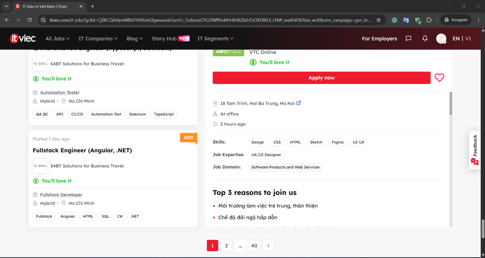
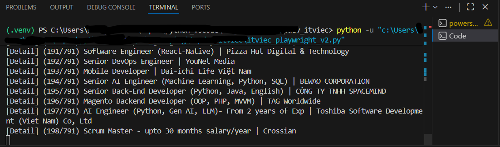

# No code found
TopDev Scraper
Python Selenium BeautifulSoup Pandas Excel Export

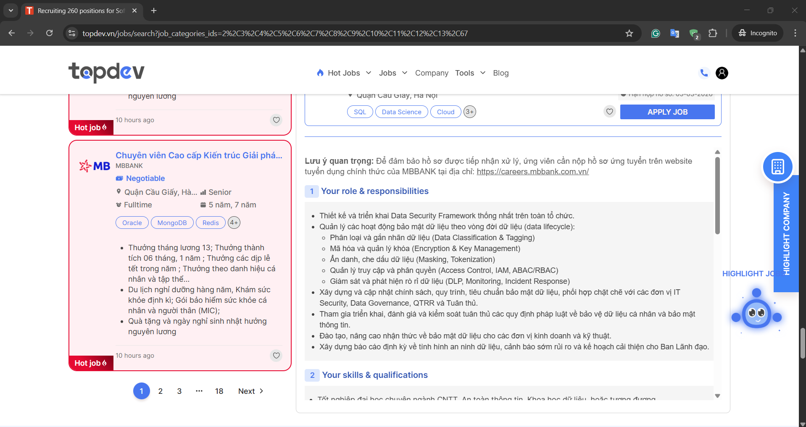
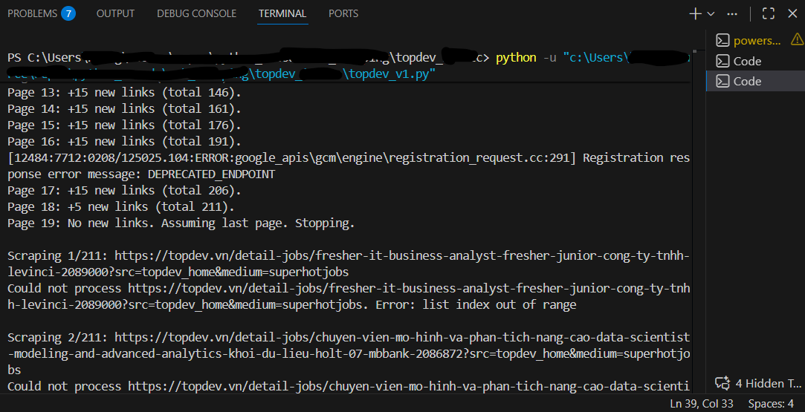
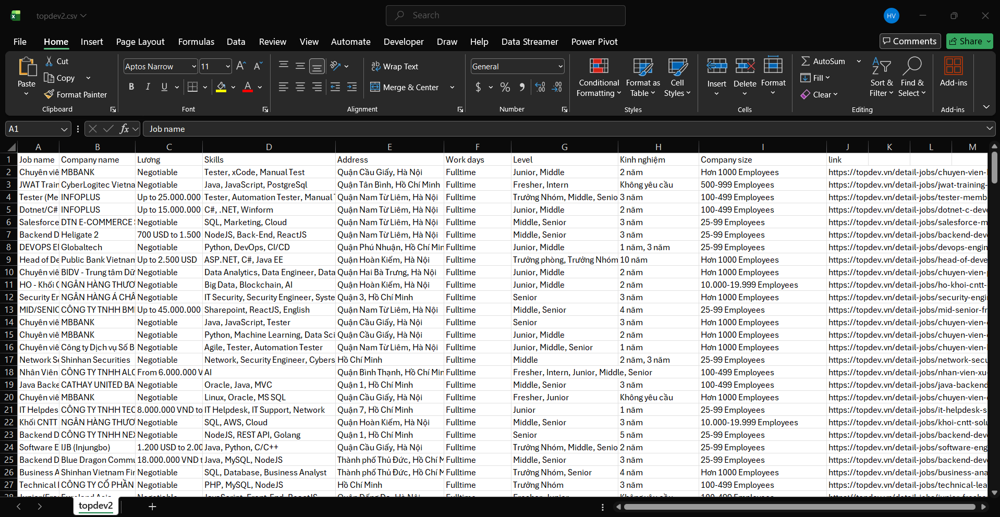
# No code found
Wiki Table Scraper
Python Requests BeautifulSoup CSV Processing Data Cleaning Wikipedia API

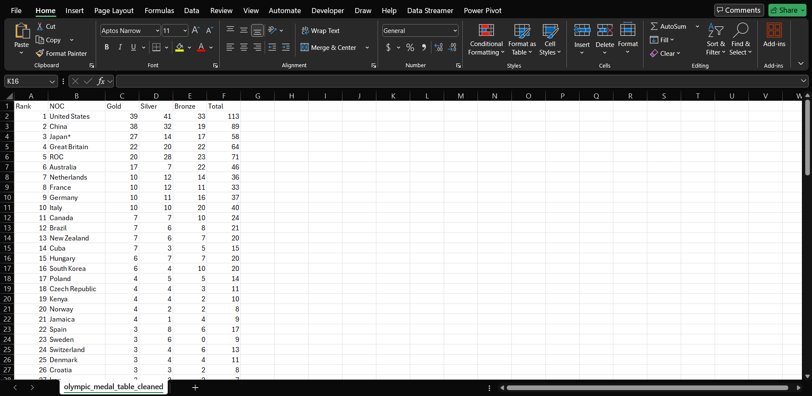
Code Snippet:
import requests
from bs4 import BeautifulSoup
import csv
url = 'https://en.wikipedia.org/wiki/2020_Summer_Olympics_medal_table'
useragent = "Mozilla/5.0 (Windows NT 10.0; Win64; x64) AppleWebKit/537.36 (KHTML, like Gecko) Chrome/58.0.3029.110 Safari/537.3"
headers = {
'User-Agent': useragent
}
response = requests.get(url, headers=headers)
if response.status_code == 200:
soup = BeautifulSoup(response.content, 'html.parser')
table = soup.find('table', {'class': 'wikitable sortable sticky-header-multi plainrowheaders jquery-tablesorter'})
data = []
for row in table.find_all('tr'):
cols = row.find_all(['th', 'td'])
cols = [col.text.strip() for col in cols]
data.append(cols)
with open('olympic_medal_table.csv', 'w', newline='', encoding='utf-8') as file:
writer = csv.writer(file)
writer.writerows(data)
print("Finished")
else:
print(f'Failed to retrieve the webpage. Status code: {response.status_code}')Code Snippet:
import csv
def process_csv(input_file, output_file):
with open(input_file, mode='r', encoding='utf-8') as infile, open(output_file, mode='w', encoding='utf-8', newline='') as outfile:
reader = csv.reader(infile)
writer = csv.writer(outfile)
previous_row = None
for row in reader:
if len(row) == 5:
if previous_row:
row.insert(0, previous_row[0])
writer.writerow(row)
previous_row = row
input_file = 'olympic_medal_table.csv'
output_file = 'olympic_medal_table_cleaned.csv'
process_csv(input_file, output_file)BBC Converter
Python Requests BeautifulSoup python-docx Pillow (PIL) BBC News

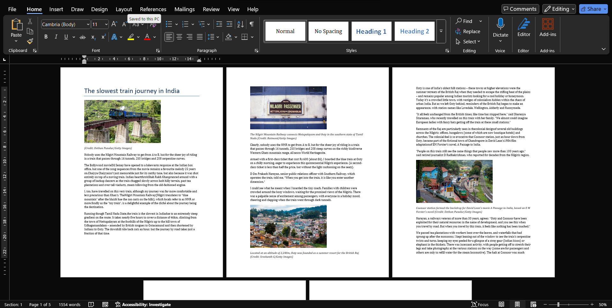
Code Snippet:
import requests
from bs4 import BeautifulSoup
from docx import Document
from docx.shared import Inches
from PIL import Image
from io import BytesIO
url = "https://www.bbc.com/travel/article/20230313-the-slowest-train-journey-in-india"
headers = {
"User-Agent": "Mozilla/5.0 (Windows NT 10.0; Win64; x64) AppleWebKit/537.36 (KHTML, like Gecko) Chrome/115.0.0.0 Safari/537.36"
}
response = requests.get(url, headers=headers)
soup = BeautifulSoup(response.text, "html.parser")
doc = Document()
article = soup.find("article")
if not article:
print("Cannot find article!")
exit()
title = article.find("h1")
if title:
doc.add_heading(title.get_text(strip=True), level=0)
# Description
desc = article.find("p", class_="ssrcss-1q0x1qg-Paragraph")
if desc:
doc.add_paragraph(desc.get_text(strip=True))
# Get content and images
for elem in article.find_all(["h2", "h3", "p", "figure"], recursive=True):
if elem.get("data-component") in ["tag-list-block", "advertisement-block"]:
break
if elem.name in ["h2", "h3"]:
text = elem.get_text(strip=True)
if text:
doc.add_heading(text, level=2)
elif elem.name == "p":
text = elem.get_text(strip=True)
if text:
doc.add_paragraph(text)
elif elem.name == "figure":
img_tag = elem.find("img", {"srcset": True})
if img_tag:
srcset = img_tag["srcset"]
img_url = srcset.split(",")[-1].strip().split(" ")[0]
print("Ảnh gốc:", img_url)
# Download image
img_res = requests.get(img_url)
image = Image.open(BytesIO(img_res.content))
# Convert to JPEG for Word
img_io = BytesIO()
image.convert("RGB").save(img_io, format="JPEG")
img_io.seek(0)
# Insert image into Word
doc.add_picture(img_io, width=Inches(4))
caption = elem.find("figcaption")
if caption:
para = doc.add_paragraph(caption.get_text(strip=True))
if para.runs:
para.runs[0].italic = True
# Save Word file
doc.save("bbc_article.docx")
print("Finished Saving")